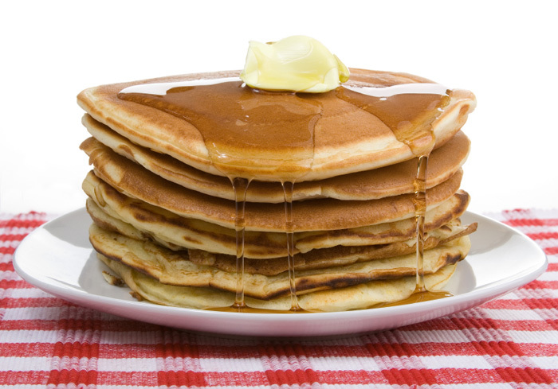

Pancakes

Description
A pancake is a flat cake made from a batter of eggs, milk and flour and fried on a very hot surface, often with
butter. Pancakes can be thin or thick, crispy or fluffy depending on the recipe, and are served with a variety
of toppings and sauces.
William Shakespeare liked pancakes, often mentioning them in his plays.
Ingredients
- 2 cups all purpose flour
- 2 cups buttermilk
- 2 eggs
- 1/4 cup sugar
- 2 Tbsp melted butter
- 1 tsp baking soda
- 2 tsp baking powder
- 1/2 tsp salt
- 1 cup berries or your own favorite topping
Steps
- Preheat oven to 350 degrees. Spray a 9x13 casserole dish with nonstick cooking spray or butter. Set aside.
- In a medium bowl, whisk buttermilk, eggs and two tablespoons of the melted butter until well combined.
- In a large bowl, whisk together flour, sugar, baking powder, baking soda and salt. Add the buttermilk
mixture and stir until combined.
- Pour the batter into the prepared pan and spread evenly. Place your favorite toppings on top.
- Bake until golden brown and puffy, about 11-12 minutes.
- Remove from oven and cut into 12 squares. Serve immediately with syrup.